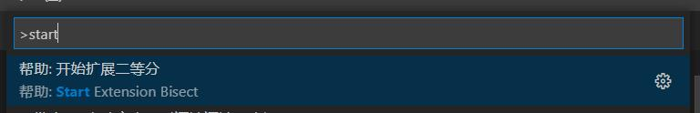
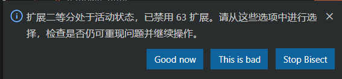

vscode使用心得
pubdate:2019-08-03 10:15:28
拓展性 (Shift + Alt + Right) 或者收缩性 (Shift + Alt + Left) 的选中文本
矩形框的鼠标选择： 同时按住 Shit 和 Alt 并使用鼠标进行拖拽选择
折叠当前光标所在区域： Ctrl + Shift + [
取消当前光标所在区域的折叠： Ctrl + Shift + ]
折叠当前文件内容的所有区域： Ctrl + K Ctrl + 0
在 Ctrl+P 窗口下还可以
直接输入文件名，跳转到文件
? 列出当前可执行的动作
! 显示 Errors 或 Warnings，也可以 `Ctrl+Shift+M
: 跳转到行数，也可以 Ctrl+G 直接进入
@ 跳转到 symbol（搜索变量或者函数），也可以 Ctrl+Shift+O 直接进入
@:根据分类跳转 symbol，查找属性或函数，也可以 Ctrl+Shift+O 后输入：进入
鼠标移动到符号上面获取的信息不多，例如 ts 中无法查看一个类型的结构，此时按住 Contol 就可以查看更详细的信息
3.
⭐❤
alt+d 跳转
vscode 有一些路径不可以通过 ctrl+click 跳转，安装这个插件可以使用快捷键跳转这些路径
4.
1.
vscode 1.49, ts 4.4 版本内置了一些这方面的支持，但还是不如这个插件完善
6.
⭐❤
volar
vue3 模板 ts 类型提示插件（爽！）。
还有一个
小问题
HTML CSS Support 干扰智能提示
以前出现了什么问题需要自己手动一个一个的禁用扩展来确定问题，很是麻烦
通过
ctrl
+
shift
+
P
输入命令
Start Extension Bisect
开始排查

执行之后结果如下

就这样一步一步的确定真正有问题的扩展，比以前自己手动禁用真的舒服多了